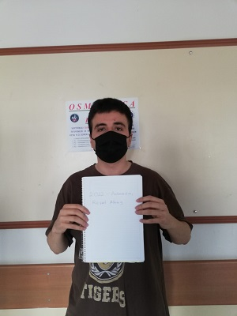

Berkay Kalın
Kimim Ben:
Ben Berkay Kalın,öncelikle iyi günler dilerim. Kırıkkae Üniversitesi Bilgisayar Mühendisliği 2.sınıf öğrencisiyim. Memleketim Erzincan
22 yaşındayım. Spor alanı ile ilgili bir insanım.
Sporun Hayatımızdaki Önemi:
Öncelikle olarak sporun sağlıklı yaşam için zorunluluk olduğunu belirtmek isterim. Spor yapmak solunum organlarını ve kasları kuvvetlendirir aynı zamanda vücudun erken yaşlanmasını önler
fakat türkiye şartlarında spor yapmak pek mümkün değil.Genellikle insanlar spor hakkında Amaaann kim uğraşacak
diye düşünüyor.Bu düşünceyi
yenmek gerçekten çok zor.Aynı zamanda ne yazık ki ülkemizdeki çalışma süresinin uzun olması ve sağlıklı besinlerin çok pahalı olması sebebiyle spor yapmak
lüks haline gelmiştir.Temennim ülkemizin en kısada sürede bu buhrandan çıkması ve çalışma saatlerinin azalması yönündedir.Ünlü Sporcu Arnold Alois Schwarzenegger
bu konu hakkında şöyle demiştir ; Spor hayatın temel zorunluluklarından biridir. Ben sporun insan hayatını düzene soktuğunu düşüncesindeyim.Yazıyı okduğunuz
için teşekkür ederim benim düşüncelerim bu yönde.Herkese sağlıklı,eğlenceli günler dilerim.